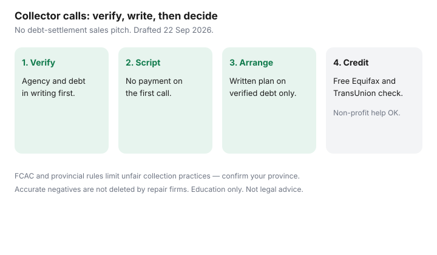

Personal Finance · Canada
If a Collector Calls in Canada: A Calm Script That Protects Your Money and Score
A collections call is designed to create urgency. Urgency is how people recite card numbers, admit debts they have not verified, or freeze and ignore a file that then gets worse. You need a calm script, written follow-up, and a clear line between verified repayment and panic.
This page is education for Canadian households. It is not legal advice, not a credit-repair pitch, and not a debt-settlement sales page. FCAC and provincial consumer pages ~22 Sep 2026. Your province’s rules apply.
Disclosure: No natural affiliate fit on this page. Saving Optimizer does not sell debt settlement, payday loans, or credit repair. If banking or counselling offer types appear elsewhere on the site, they will carry their own disclosure. Education only — not legal or credit advice.
Key takeaways
- Verify the agency and the debt in writing before you pay or admit liability.
- Use a short phone script; end the call if pressured; follow up in writing.
- FCAC and provincial rules limit harassment and unfair practices — read the current page for your situation.
- A payment arrangement on a verified debt beats silence; it is not the same as a settlement-company pitch.
- Check Equifax and TransUnion yourself for free; dispute errors; accurate negatives age on a legal schedule.
- Non-profit credit counselling is the calm next step when the budget cannot clear minimums.
Verify the debt and the agency before you pay
Ask for, and write down:
- Collector’s full legal name, agency name, address, and callback number
- Original creditor’s name and approximate amount
- File or account reference number
- Whether they will send validation details in writing (mail or email you control)
Compare the story to your own records and to your free credit reports. Fraud and wrong-person contacts happen. Paying the wrong party is hard to undo. Do not give a card number on the first call.

What collectors can and cannot do (FCAC high level)
FCAC publishes guidance on dealing with debt collectors, including that you can ask for information in writing and that certain contact practices are restricted. Provinces and territories add their own collection-agency rules (hours of contact, workplace calls, and unfair practices). Québec and other provinces have specific consumer-protection frameworks — use your provincial consumer affairs office for the binding detail.
High-level patterns to remember: you can end a call that becomes abusive; you can ask to be contacted in writing; false threats of criminal charges for ordinary consumer debt are a red flag. This summary is not a statute. Read FCAC and your province the day after the call, not during it.
A calm phone script and written follow-up
Say, slowly:
“I will not discuss payment on this call. Please send the agency name, address, original creditor, and amount in writing to [your mail or email]. I will respond after I verify. Goodbye.”
If they already mailed you, say you received mail and will respond by a date you can meet — then meet it. After the call, send a short letter or email: request validation, state you will communicate in writing, and keep copies. Do not argue the life story of the debt on the phone.
Payment arrangements vs ignoring the call
Once the debt is verified and yours, options include paying in full, proposing a written payment plan you can actually keep, or seeking non-profit counselling for a structured program. Ignoring a verified debt rarely helps credit or stress.
Settling for less than the balance may have tax and credit consequences and is sometimes offered by creditors or agencies — that is different from paying a third-party “settlement company” upfront fees to negotiate for you. This site does not recommend settlement-company sales. If you negotiate, get every term in writing before you pay.
Household payoff order for high-rate balances you still control is on household debt payoff and snowball versus avalanche.
Credit report impacts to expect
Collections and late payments can appear on Equifax and TransUnion files and affect scores. Accurate negative items generally remain for a period set by law and bureau practice (often measured in years, varying by item and province). Paying does not always erase history immediately; it should update the status over time.
Pull both free reports and dispute errors yourself — process on check your credit report free. Credit-repair firms cannot delete accurate information early. Utilization work on cards you still hold is on lower credit utilization.
When to get non-profit credit counselling
Contact a non-profit credit counselling service when minimums no longer fit the budget, when several collectors are active, or when you need a supervised repayment plan. Provincial and non-profit agencies are the starting point — not a TV settlement ad.
Bring: pay stubs, a bill list, collector letters, and both credit reports. Ask about fees in writing. Decline anyone who guarantees deletion of accurate negatives or who pressures an upfront settlement fee before a written plan exists.
Sources & date stamps
- FCAC — dealing with debt collectors; credit report and dispute guidance (~22 Sep 2026).
- Provincial / territorial consumer affairs — collection agency rules and complaint paths (confirm your province).
- Equifax and TransUnion — free consumer disclosures; dispute processes (aligned with this site’s credit-report guide).
- Non-profit credit counselling — provincial directories and Credit Counselling Canada member listings; verify non-profit status yourself.
Frequently asked questions
What should I do on the first collections call?
Stay calm. Do not admit the debt or pay on the spot. Ask for the agency’s name, address, phone number, and the creditor’s name in writing. Say you will follow up after you verify. Then hang up politely.
What can collectors do in Canada?
Rules vary by province and by whether the collector is federally or provincially regulated. FCAC publishes high-level guidance on dealings with collectors. Harassment, false threats, and contacting you at prohibited times are commonly restricted — confirm your province’s consumer affairs page.
Will talking to a collector hurt my credit score?
A collection already on your file is a credit issue. Paying or arranging payment may eventually update the status; it does not erase history overnight. Ordering your own Equifax and TransUnion reports is free and does not hurt the score — see the free credit-report guide.
Should I ignore the call?
Ignoring rarely makes a verified debt disappear and can lead to further contact or legal steps the creditor may take. Verification and a written plan beat silence and beat panic payments.
When should I contact non-profit credit counselling?
When you cannot see a path to minimums, when multiple collectors are calling, or when you need a budget and a repayment structure. Prefer non-profit provincial counselling services. This page does not sell debt settlement.